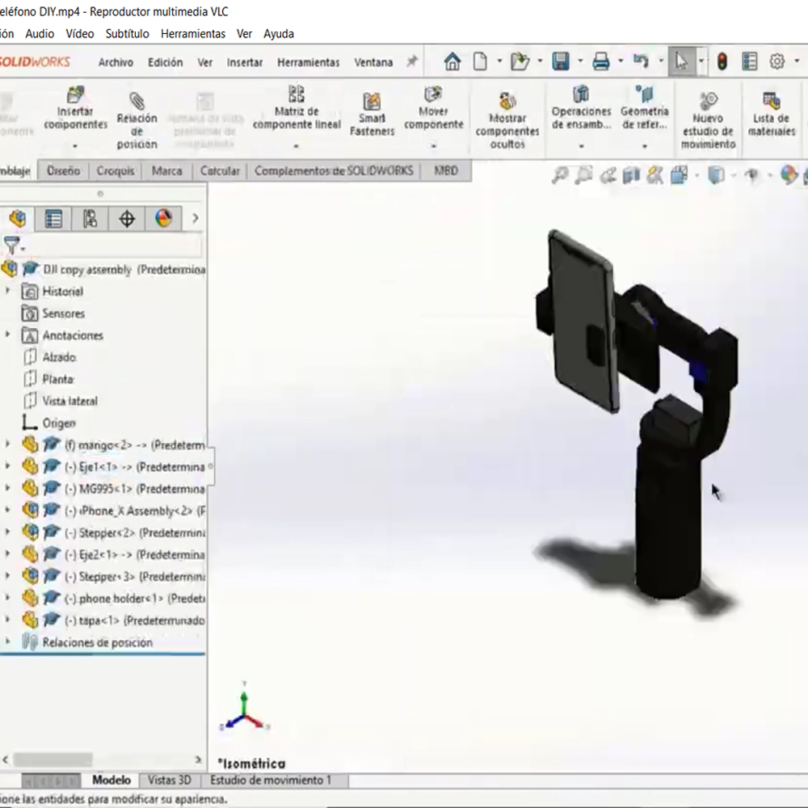

Evidencias



Con mi canal de youtube me planteé grabar videos sobre la elaboración de mis proyectos y un estabilizador de videos es una herramienta indispensable para ese propósito, el problema con el que me enfrenté al tratar de adquirir uno fueron sus altos costos, por ello opté por hacerlo yo mismo.
Con un poco de diseño en SolidWorks creé el mango para sostenerlo y los componentes móviles, la meta de este dispositivo hecho en casa era lograr mantener el teléfono en una orientación ya sea completamente horizontal o vertical sin importar cuanto se mueva mi mano, para hacer eso dos motores paso a paso estaban conectados para inclinar el teléfono de izquierda a derecha y de arriba a abajo. La forma de saber cuantos grados debían rotar estos motores era por medio de un acelerómetro colocado de manera paralela a la parte superior de mi mano al sostener el dispositivo, de esa forma los ángulos de inclinación de la mano se podían compensar con los ángulos de inclinación de los motores.
Como un extra decidí añadir un joystick para cambiar hacía dónde apunta el teléfono por defecto y conseguir estabilización en diferentes ángulos. Además con este joystick sería posible cambiar la orientación de vertical a horizontal y hacer uso de un tercer motor de paneo para rotar el teléfono con un grado más de libertad.
El proceso de diseño, construcción y programación puede ser encontrado en el siguiente enlace.